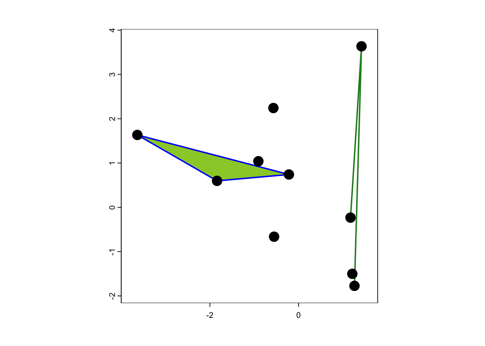
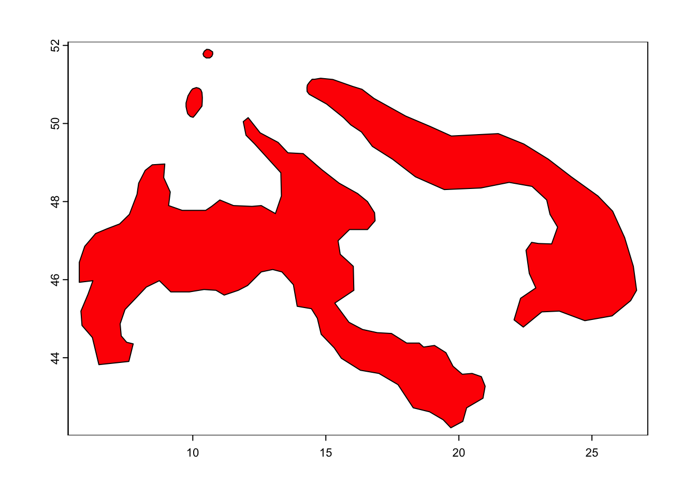
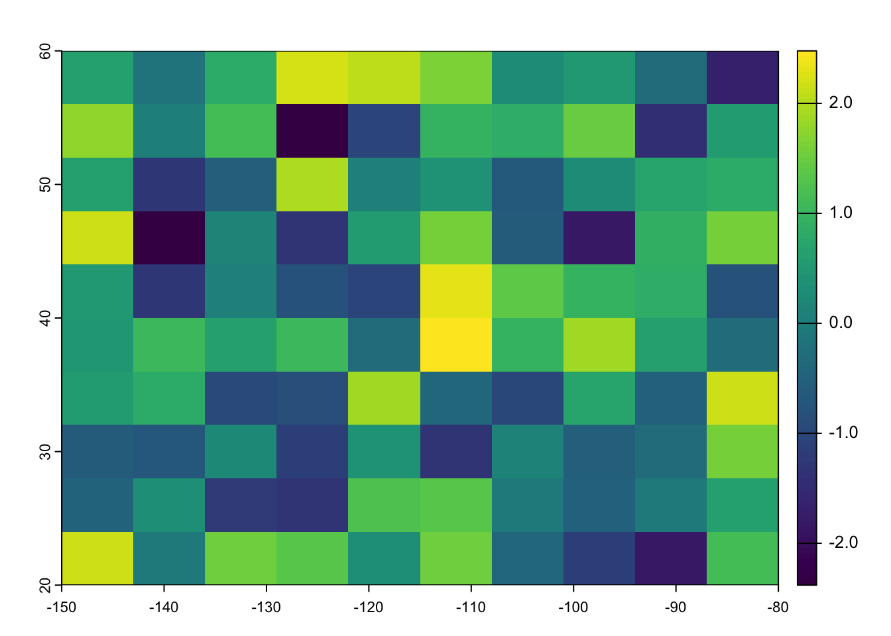
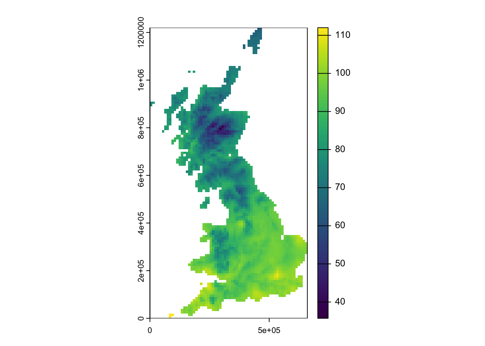
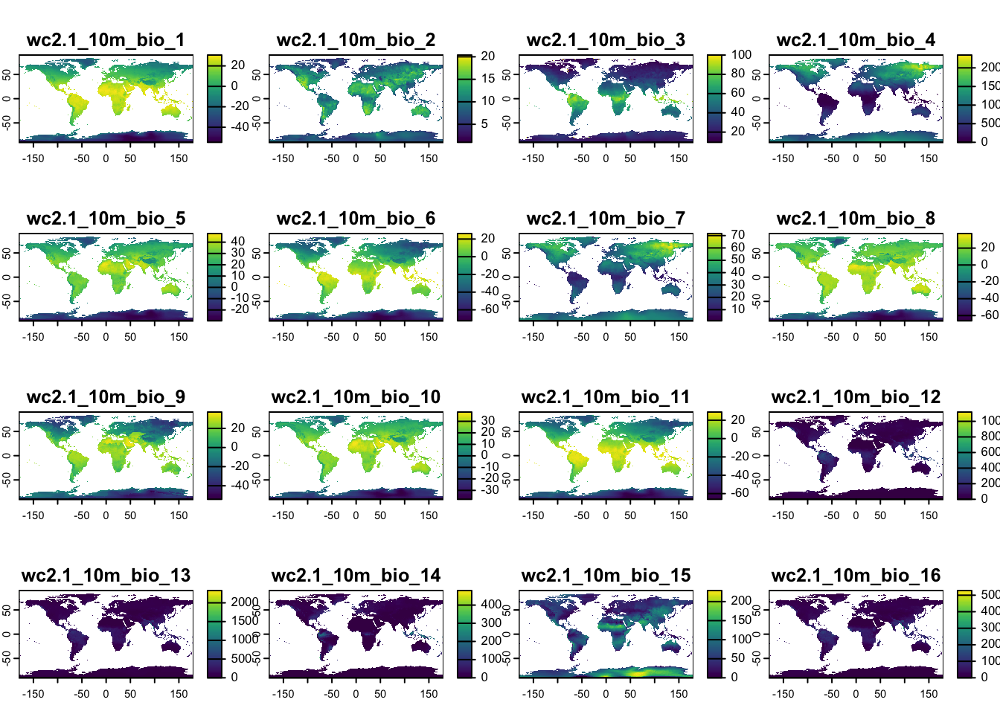
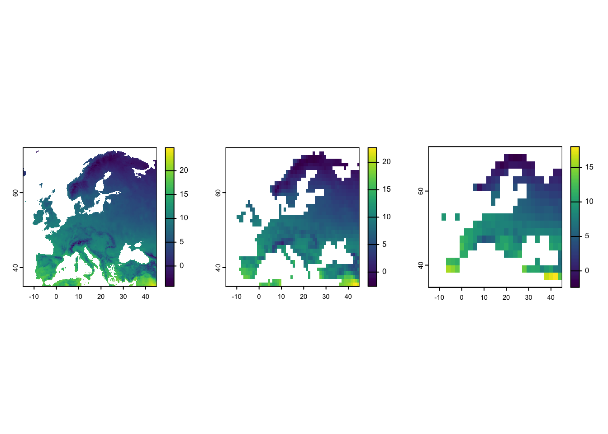
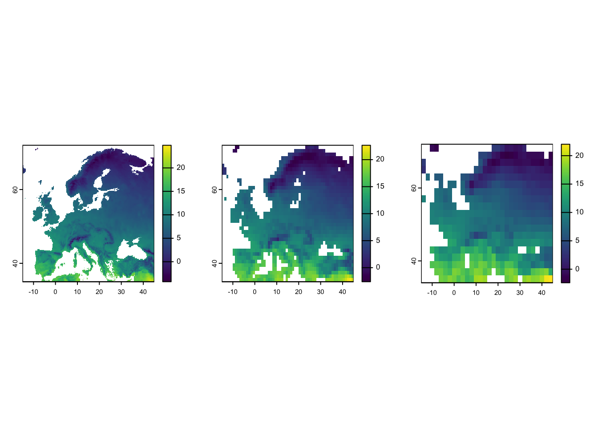
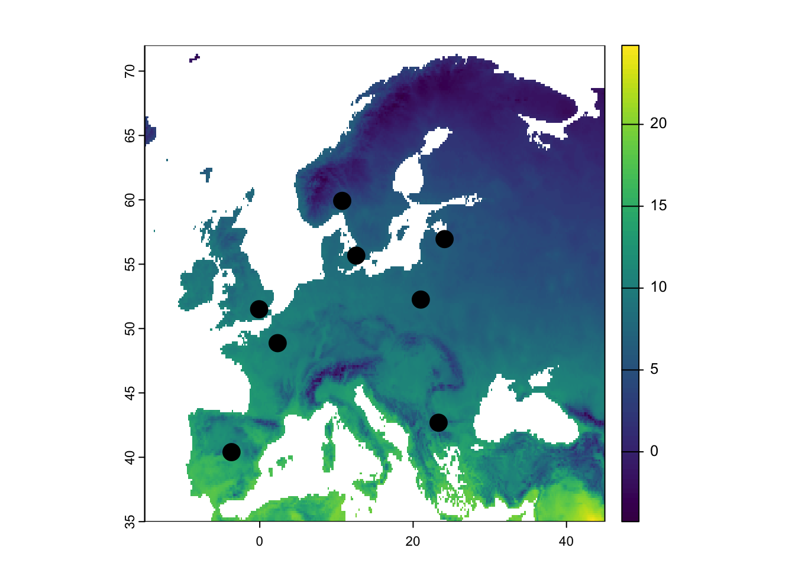

Spatial data in R
RStudio project
Open the RStudio project that we created in the previous session. I recommend to use this RStudio project for the entire module and within the RStudio project create separate R scripts for each session.
- Create a new empty R script by going to the tab “File”, select “New File” and then “R script”
- In the new R script, type
# Session a1: Spatial data in Rand save the file in your folder “scripts” within your project folder, e.g. as “a1_SpatialData.R”
Nowadays, R offers a lot of GIS functionalities in different packages.
We will use a number of such GIS packages in R. Remember that we can
install new packages with the function install.packages().
Make sure also to install the dependencies.
install.packages(c('terra'), dep=T)# load required package
library(terra)1 Introduction to spatial data
Spatial data are typically stored as either vector data or raster data (With 2019). Discrete objects with clear boundaries are usually represented by vector data (e.g. individual trees, roads, countries) while continuous phenomena without clear boundaries are usually represented by raster data (e.g. elevation, temperature).
Vector data can be mapped as points, lines, and polygons:
- Points occur at discrete locations and are represented by a coordinate pair (x,y). Each point may carry additional informaton, the so-called attributes, e.g. the species name of the individual captured at the location along with date.
- Lines describe linear features and are defined by at least two coordinate pairs (x,y), the end points of the line. A line can also consistent of several line segments.
- Polygons describe two-dimensional features in the landscapes and define a bounded area, enclosed by lines. Thus, a polygon needs to consist of at least three coordinate pairs (x,y.
By contrast, Raster data represent the landscape as a regularly spaced grid and are used to represent data that vary continuously across space such as elevation, temperature or NDVI. Raster cells can contain numeric values (e.g. elevation) or categorical values (e.g. land cover type). The coordinate information is stored differently from vector data because storing the coordinates for each grid cell in the raster would use too much storage space. To define a raster, we only need to know the coordinates of one corner, the spatial extent and the spatial resolution to infer the coordinates of each cell.
2 Vector data in R
The package terra provides a set of classes and methods
to carry out spatial data analysis with raster and vector data. For
illustration, we will start by creating a few SpatVector
objects.
For more detailed tutorials see https://rspatial.org/terra/.
2.1 SpatialPoints
First, we generate some random points data.
# We set a seed for the random number generator, so that we all obtain the same results
set.seed(12345)
coords <- cbind(
x <- rnorm(10, sd=2),
y <- rnorm(10, sd=2)
)
str(coords)## num [1:10, 1:2] 1.171 1.419 -0.219 -0.907 1.212 ...plot(coords)We now convert the random points into a SpatVector
object and inspect it.
# Convert into SpatVector
sp <- terra::vect(coords)
# Check out the object
class(sp)## [1] "SpatVector"
## attr(,"package")
## [1] "terra"# And the entries:
sp ## class : SpatVector
## geometry : points
## dimensions : 10, 0 (geometries, attributes)
## extent : -3.635912, 1.418932, -1.772715, 3.634624 (xmin, xmax, ymin, ymax)
## coord. ref. :geom(sp)## geom part x y hole
## [1,] 1 1 1.1710576 -0.2324956 0
## [2,] 2 1 1.4189320 3.6346241 0
## [3,] 3 1 -0.2186066 0.7412557 0
## [4,] 4 1 -0.9069943 1.0404329 0
## [5,] 5 1 1.2117749 -1.5010640 0
## [6,] 6 1 -3.6359119 1.6337997 0
## [7,] 7 1 1.2601971 -1.7727150 0
## [8,] 8 1 -0.5523682 -0.6631552 0
## [9,] 9 1 -0.5683195 2.2414253 0
## [10,] 10 1 -1.8386440 0.5974474 0We see that it is a vector data object with point geometries. An
extent (the bounding box) was created automatically from the provided
coordinates. The coord. ref. value is empty as we haven’t
provided a coordinate reference system (“CRS”) yet. We can explicitly
add a CRS when creating the SpatVector object:
sp <- terra::vect(coords, crs = '+proj=longlat +datum=WGS84')
sp## class : SpatVector
## geometry : points
## dimensions : 10, 0 (geometries, attributes)
## extent : -3.635912, 1.418932, -1.772715, 3.634624 (xmin, xmax, ymin, ymax)
## coord. ref. : +proj=longlat +datum=WGS84 +no_defsAt the moment the SpatVector object only contains the
point coordinates without any additional thematic information (or
attributes) for each point. Let’s assume the spatial points are trees,
either of three species. We can simply add these attributes to the
existing object. To do so, we first need to create a data frame with the
same number of rows as we have geometries (points in this case).
# Create attribute table
(data <- data.frame(ID=1:10,species=sample(c('beech','oak','birch'),10,replace=T)))## ID species
## 1 1 oak
## 2 2 oak
## 3 3 birch
## 4 4 beech
## 5 5 beech
## 6 6 birch
## 7 7 oak
## 8 8 beech
## 9 9 beech
## 10 10 birchNow, we combine the SpatVector object and the data frame
and store it in a new SpatVector object.
# in terra, you can simply add the additional information to the existing Spatial Vector
sp_trees <- sp
terra:: values(sp_trees) <- data
# Inspect the new object
sp_trees## class : SpatVector
## geometry : points
## dimensions : 10, 2 (geometries, attributes)
## extent : -3.635912, 1.418932, -1.772715, 3.634624 (xmin, xmax, ymin, ymax)
## coord. ref. : +proj=longlat +datum=WGS84 +no_defs
## names : ID species
## type : <int> <chr>
## values : 1 oak
## 2 oak
## 3 birch2.2 Spatial lines and spatial polygons
Similarly, we can also create SpatVector of lines or
polygons. First, we want to create a line vector object from the oaks -
we could assume that it is an oak hedgerow.
# prepare a subset of point geometries for oaks
oak <- terra::subset(sp_trees, sp_trees$species == 'oak')
# extract oak coordinates
oak_coords <- terra::crds(oak)
# Create SpatVector lines through all oak trees in the data
oak_hedge <- terra::vect(oak_coords, type="lines", crs='+proj=longlat +datum=WGS84')
# Inspect the object
oak_hedge## class : SpatVector
## geometry : lines
## dimensions : 1, 0 (geometries, attributes)
## extent : 1.171058, 1.418932, -1.772715, 3.634624 (xmin, xmax, ymin, ymax)
## coord. ref. : +proj=longlat +datum=WGS84 +no_defsNext, we create a polygon vector from the birch data - we could assume that it is a birch woodland patch.
# prepare a subset of point geometries for birch
birch <- terra::subset( sp_trees, sp_trees$species == 'birch')
# extract birch coordinates
birch_coords <- terra::crds(birch)
# Create SpatVector polygons
birch_patch <- terra::vect(birch_coords, type = "polygons", crs='+proj=longlat +datum=WGS84')
# inspect the object
birch_patch## class : SpatVector
## geometry : polygons
## dimensions : 1, 0 (geometries, attributes)
## extent : -3.635912, -0.2186066, 0.5974474, 1.6338 (xmin, xmax, ymin, ymax)
## coord. ref. : +proj=longlat +datum=WGS84 +no_defsFinally, let’s plot our point, line and polygon data.
# We first plot the bird woodland patch but with the spatial extent of sp_trees (plus some buffer):
plot(birch_patch, border='blue',col='YellowGreen', ext=ext(sp_trees)*1.1, lwd=2)
# Add the oak hedge
plot(oak_hedge, col='ForestGreen', lwd=2, add=T)
# Add the trees
plot(sp_trees, cex=2, add=T)
2.3 Reading vector data from file
Most often, vector data are stored as shapefiles. Download the zip folder containg IUCN range data of the Alpine Shrew to your data folder and unzip it. You will see that several files are contained in this folder. All of these are necessary parts of the shapefile and contain the different information on geometry and attributes.
We use the terra package to read in the data:
(shrew <- terra::vect('data/IUCN_Sorex_alpinus.shp'))## class : SpatVector
## geometry : polygons
## dimensions : 1, 27 (geometries, attributes)
## extent : 5.733728, 26.67935, 42.20601, 51.89984 (xmin, xmax, ymin, ymax)
## source : IUCN_Sorex_alpinus.shp
## coord. ref. : lon/lat WGS 84 (EPSG:4326)
## names : id_no binomial presence origin seasonal compiler yrcompiled
## type : <chr> <chr> <int> <int> <int> <chr> <int>
## values : 29660 Sorex alpinus 1 1 1 IUCN 2008
## citation source dist_comm (and 17 more)
## <chr> <chr> <chr>
## IUCN (Internat~ NA NA# Plot the range of the Alpine Shrew
plot(shrew, col='red')
# Plot Central Europe as background map
library(maps)
map('world',xlim=c(5,30), ylim=c(40,55))
# Overlay the range of the Alpine Shrew
plot(shrew, col='red', add=T)
3 Raster data in R
We will use the terra package to represent and analyse
raster data in R. The package contains raster data class
SpatRaster, which can contain only a single layer of raster
information or multiple layers (from separate files or from a single
multi-layer file, respectively).
The function rast() can be used to create or read in
SpatRaster objects.
# Create a SpatRaster object
(r1 <- terra::rast(ncol = 10, nrow = 10, xmax = -80, xmin = -150, ymax = 60, ymin = 20 ))## class : SpatRaster
## dimensions : 10, 10, 1 (nrow, ncol, nlyr)
## resolution : 7, 4 (x, y)
## extent : -150, -80, 20, 60 (xmin, xmax, ymin, ymax)
## coord. ref. : lon/lat WGS 84We can access the attributes of each grid cell by using the function
values(). Obviously, there are no values yet in the
RasterLayer object and thus we assign some randomly.
# Inspect value in SpatRaster:
summary(terra::values(r1))## lyr.1
## Min. : NA
## 1st Qu.: NA
## Median : NA
## Mean :NaN
## 3rd Qu.: NA
## Max. : NA
## NA's :100# Assign values (randomly drawn from normal distribution) to the SpatRaster object:
terra::values(r1) <- rnorm(ncell(r1))
# plot the raster
plot(r1)
We can easily create a multi-layer SpatRaster object
using the c() (concatenate) function.
# Create another RasterLayer and assign values
r2 <- r1
terra::values(r2) <- 1:ncell(r2)
# Create multi-layer SpatRaster object
(r <- c(r1, r2))## class : SpatRaster
## dimensions : 10, 10, 2 (nrow, ncol, nlyr)
## resolution : 7, 4 (x, y)
## extent : -150, -80, 20, 60 (xmin, xmax, ymin, ymax)
## coord. ref. : lon/lat WGS 84
## source(s) : memory
## names : lyr.1, lyr.1
## min values : -2.380358, 1
## max values : 2.477111, 100names(r) <- c('Layer 1', 'Layer 2')
plot(r)3.1 Read in raster data
In most cases, we will read in raster data from file. For this we can
use the same commands as above, rast() for reading in both
single-layer and multi-layer raster files.
First, download the temperature map for UK here to your data folder and read it in. The raster layer represents the mean annual in temperature [°C * 10].
# Read in SpatRaster object from file:
(temp <- terra::rast('data/UK_temp.tif'))## class : SpatRaster
## dimensions : 122, 66, 1 (nrow, ncol, nlyr)
## resolution : 10000, 10000 (x, y)
## extent : 0, 660000, 0, 1220000 (xmin, xmax, ymin, ymax)
## coord. ref. : +proj=tmerc +lat_0=49 +lon_0=-2 +k=0.9996012717 +x_0=400000 +y_0=-100000 +ellps=airy +units=m +no_defs
## source : UK_temp.tif
## name : UK_temp
## min value : 35.71785
## max value : 112.00000plot(temp)
Second, download the geotiff file containing multi-layer raster data for 19 bioclimatic variables of UK, and put it into your data folder. The bioclimatic variables are explained here.
# Reading multi-layer SpatRaster data from file uses the same command as for single-layer data:
(bioclim <- terra::rast('data/UK_bioclim.tif'))## class : SpatRaster
## dimensions : 122, 66, 19 (nrow, ncol, nlyr)
## resolution : 10000, 10000 (x, y)
## extent : 0, 660000, 0, 1220000 (xmin, xmax, ymin, ymax)
## coord. ref. : +proj=tmerc +lat_0=49 +lon_0=-2 +k=0.9996012717 +x_0=400000 +y_0=-100000 +ellps=airy +units=m +no_defs
## source : UK_bioclim.tif
## names : bio1, bio2, bio3, bio4, bio5, bio6, ...
## min values : 35.71785, 41.00000, 30, 3060.245, 134.0000, -55.48918, ...
## max values : 112.00000, 82.64219, 40, 5321.534, 231.5805, 43.00000, ...plot(bioclim)3.2 Download raster data
The geodata package is offering direct access to some
standard repositories. Check them out in the help page
?geodata. The package provides access, for example, to
elevation data, data on the global administrative boundaries (gadm) as
well as current and future climates from WorldClim (Hijmans et al. 2005).
## class : SpatRaster
## dimensions : 1080, 2160, 19 (nrow, ncol, nlyr)
## resolution : 0.1666667, 0.1666667 (x, y)
## extent : -180, 180, -90, 90 (xmin, xmax, ymin, ymax)
## coord. ref. : lon/lat WGS 84 (EPSG:4326)
## sources : wc2.1_10m_bio_1.tif
## wc2.1_10m_bio_2.tif
## wc2.1_10m_bio_3.tif
## ... and 16 more source(s)
## names : wc2.1~bio_1, wc2.1~bio_2, wc2.1~bio_3, wc2.1~bio_4, wc2.1~bio_5, wc2.1~bio_6, ...
## min values : -54.72435, 1.00000, 9.131122, 0.000, -29.68600, -72.50025, ...
## max values : 30.98764, 21.14754, 100.000000, 2363.846, 48.08275, 26.30000, ...library(geodata)
# Download global bioclimatic data from worldclim (you may have to set argument 'download=T' for first download, if 'download=F' it will attempt to read from file):
(clim <- geodata::worldclim_global(var = 'bio', res = 10, download = F, path = 'data'))plot(clim)
3.3 Manipulate raster data
The terra package offers functionality to manipulate the
spatial data, for example aggregating the data to coarser resolutions
(aggregate()), or cropping to a specific extent
(crop()).
# Rough coordinates of European extent
ext_eur <- c(-15,45,35,72)
# Crop the temperature layer (bio1) to roughly European extent
temp_eur <- terra::crop(clim[[1]], ext_eur)
# Aggregate to one-degree and two-degree resolution (from currently 10-min resolution)
temp_eur_onedeg <- terra::aggregate(temp_eur, fact=6)
temp_eur_twodeg <- terra::aggregate(temp_eur, fact=12)
# Plot the resultin maps
par(mfrow=c(1,3))
plot(temp_eur)
plot(temp_eur_onedeg)
plot(temp_eur_twodeg)
# Test other options like the na.rm argument:
# Aggregate to one-degree and two-degree resolution (from currently 10-min resolution)
temp_eur_onedeg <- terra::aggregate(temp_eur, fact=6, na.rm=T)
temp_eur_twodeg <- terra::aggregate(temp_eur, fact=12, na.rm=T)
# Plot the resultin maps
par(mfrow=c(1,3))
plot(temp_eur)
plot(temp_eur_onedeg)
plot(temp_eur_twodeg)
3.4 Extract raster data
There are different ways for extracting information from raster
layers. We have already worked with values(). If we have
coordinate data, we can use these coordinates to “pierce” through raster
layers. That’s one of the easiest ways to extract relevant environmental
data for specific locations. Let’s first extract the climate data for
Potsdam.
# Potsdam coordinates - we need these as two-column matrix (or data.frame or SpatVector)
lonlat_Potsdam <- matrix( c(13.063561, 52.391842), ncol=2)
# Extract temperature values for Potsdam:
terra::extract(temp_eur, lonlat_Potsdam)## wc2.1_10m_bio_1
## 1 9.229239# Extract climate values for Potsdam:
terra::extract(clim, lonlat_Potsdam)## wc2.1_10m_bio_1 wc2.1_10m_bio_2 wc2.1_10m_bio_3 wc2.1_10m_bio_4
## 1 9.229239 8.012188 30.85883 687.4697
## wc2.1_10m_bio_5 wc2.1_10m_bio_6 wc2.1_10m_bio_7 wc2.1_10m_bio_8
## 1 23.6355 -2.3285 25.964 17.79533
## wc2.1_10m_bio_9 wc2.1_10m_bio_10 wc2.1_10m_bio_11 wc2.1_10m_bio_12
## 1 4.618125 17.79533 0.94125 546
## wc2.1_10m_bio_13 wc2.1_10m_bio_14 wc2.1_10m_bio_15 wc2.1_10m_bio_16
## 1 65 34 20.14255 171
## wc2.1_10m_bio_17 wc2.1_10m_bio_18 wc2.1_10m_bio_19
## 1 111 171 127For further illustration, we want to extract raster data for several locations, specifically for different European capitals.
capitals <- data.frame(lon=c(2.333333, -3.683333, -0.083333, 12.583333, 10.75, 21, 23.316667, 24.1, 0),
lat=c(48.86666667, 40.4, 51.5, 55.66666667, 59.91666667, 52.25, 42.68333333, 56.95, 0),
capital=c('Paris', 'Madrid', 'London', 'Copenhagen', 'Oslo', 'Warsaw', 'Sofia', 'Riga','Oops'))
# Map temperature and locations
plot(temp_eur)
points(capitals[,1:2], cex=2, pch=19)
# Extract temperature values at these locations
terra::extract(temp_eur, capitals[,1:2])## ID wc2.1_10m_bio_1
## 1 1 11.604875
## 2 2 14.344760
## 3 3 10.485146
## 4 4 8.415707
## 5 5 5.774378
## 6 6 8.199729
## 7 7 9.835594
## 8 8 6.548781
## 9 9 NA# Combine data frames:
(capitals_clim <- cbind(capitals, terra::extract(temp_eur, capitals[,1:2])))## lon lat capital ID wc2.1_10m_bio_1
## 1 2.333333 48.86667 Paris 1 11.604875
## 2 -3.683333 40.40000 Madrid 2 14.344760
## 3 -0.083333 51.50000 London 3 10.485146
## 4 12.583333 55.66667 Copenhagen 4 8.415707
## 5 10.750000 59.91667 Oslo 5 5.774378
## 6 21.000000 52.25000 Warsaw 6 8.199729
## 7 23.316667 42.68333 Sofia 7 9.835594
## 8 24.100000 56.95000 Riga 8 6.548781
## 9 0.000000 0.00000 Oops 9 NANote: if no environmental data are available for a specific location,
e.g. no temperature values are available in the ocean, then these
locations will receive an NA value. Hence, you should
always check your resulting data for NAs.
# Remove NAs in resulting data frame
na.exclude(capitals_clim)## lon lat capital ID wc2.1_10m_bio_1
## 1 2.333333 48.86667 Paris 1 11.604875
## 2 -3.683333 40.40000 Madrid 2 14.344760
## 3 -0.083333 51.50000 London 3 10.485146
## 4 12.583333 55.66667 Copenhagen 4 8.415707
## 5 10.750000 59.91667 Oslo 5 5.774378
## 6 21.000000 52.25000 Warsaw 6 8.199729
## 7 23.316667 42.68333 Sofia 7 9.835594
## 8 24.100000 56.95000 Riga 8 6.5487814 Homework prep
For the homework, you will need several objects that you should not forget to save.
# Write terra objects to file:
terra::writeRaster(temp_eur, 'data/temp_eur.tif')
terra::writeRaster(temp_eur_onedeg, 'data/temp_eur_onedeg.tif')
terra::writeRaster(temp_eur_twodeg, 'data/temp_eur_twodeg.tif')
# You will also need the SpatRaster "clim" but this was directly downloaded from geodata package, so is already on file
# Save other (non-terra) objects from the workspace:
save(capitals, file='data/a1_SpatialData.RData')As homework, solve all the exercises in the blue boxes.
Exercise:
- Take the capital locations and extract also the temperature values
at the aggregated scales (
temp_eur_onedeg,temp_eur_twodeg). Compare the temperature values. - Take the capital locations and extract all 19 bioclimatic variables
for these (from the
SpatRasterobjectclim) - Find the coordinates of 10 cities in Australia (or another continent of your choice) and extract the climate values